이 공통 기능은 강사 모드와 관리자 모드에서 동일하게 동작합니다. 어느 모드에서 보셔도 같은 내용입니다.
회원 가입과 로그인
센티프를 처음 사용하신다면 계정을 먼저 만들어야 합니다. 1분이면 충분합니다.
1. 간편 로그인으로 시작하기
1
앱을 켜면 로그인 화면이 나옵니다. 카카오 · 네이버(아이폰은 Apple까지) 버튼으로 바로 시작할 수 있습니다.
2
처음 이용하는 계정이라면 이름 · 휴대폰 인증 · 생년월일 · 성별만 추가로 입력하면 가입이 끝납니다.
3
이메일로 가입하고 싶다면 [이메일로 로그인] → [회원가입]으로 들어갑니다.
2. 이메일로 가입하기
1
이메일을 입력하고 오른쪽 [중복 확인]을 눌러 사용 가능한 주소인지 먼저 확인합니다.
2
비밀번호는 8자 이상으로 만들고 아래 칸에 한 번 더 입력합니다.
3
이름을 적고, 휴대폰 번호 오른쪽 [인증 요청]으로 본인 인증을 마칩니다.
4
생년월일과 성별까지 고른 뒤 [가입하기]를 누르면 완료됩니다.
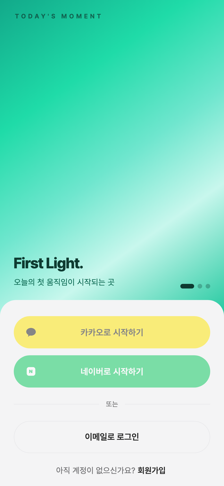
로그인 화면 — 간편 로그인 또는 [이메일로 로그인]
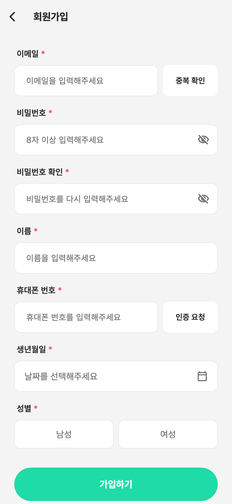
이메일 회원가입 — 이메일 중복 확인과 휴대폰 인증이 필요합니다
3. 계정 탈퇴
계정 탈퇴는 앱 안에서 바로 처리할 수 있습니다.
1
프로필 탭 → 계정 관리로 이동한 뒤 [계정 탈퇴]를 누릅니다.
2
안내 문구를 확인하고 동의에 체크한 뒤 [탈퇴하기]를 누르면 즉시 처리됩니다.
⚠️
계정을 삭제하면 작성한 수업 일지, 회원 기록, 상품 발급 내역이 함께 삭제됩니다. 삭제된 데이터는 복구되지 않으며, 계정을 다시 만들어도 이전 기록은 되돌아오지 않습니다.
워크스페이스 생성·참여
워크스페이스는 우리 센터의 공간입니다. 혼자라면 새로 만들고, 이미 운영 중인 센터에 합류한다면 초대를 받아 참여하세요.
1. 새 워크스페이스 만들기
1
가입 후 워크스페이스 선택 화면에서 [새 워크스페이스 생성]을 눌러주세요.
2
워크스페이스 이름만 필수입니다. 센터 사진·로고, 대표 주소, 대표 연락처는 나중에 설정에서 추가해도 됩니다.
3
주소는 직접 타이핑하지 않고 우편번호 검색으로 고릅니다. 만든 사람은 자동으로 대표가 됩니다.
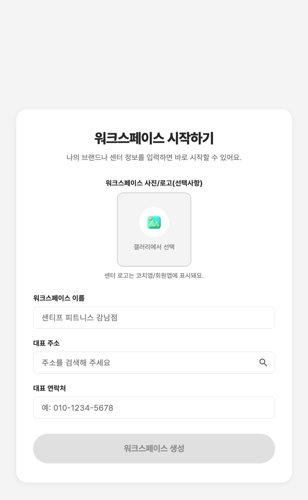
워크스페이스 생성 — 이름만 필수, 로고는 회원 앱에도 표시됩니다
2. 기존 워크스페이스 참여하기
1
내 고유코드(8자)를 대표님께 알려주세요. 프로필 화면의 초대코드 항목에서 복사할 수 있습니다.
2
대표님이 그 코드로 초대하면, 참여할 워크스페이스가 선택 화면에 나타납니다.
3
워크스페이스를 선택해 수락하면 센터의 회원·일정 데이터와 연결됩니다. 요금은 이 수락 시점에 대표님이 등록해둔 결제수단에서 결제되며, 강사님이 결제하실 것은 없습니다.
4
대표님 쪽 결제가 실패하면 합류가 취소되고 초대가 사라집니다. 이때는 대표님께 다시 초대를 요청해주세요.
💡
두 번째 인원부터는 초대를 보낼 때 워크스페이스에 결제수단을 등록해야 합니다. 초대를 보낸 것만으로는 요금이 나가지 않고, 초대받은 분이 수락하는 순간 그 결제수단에서 결제됩니다. 자세한 내용은 요금제를 확인해주세요.
강사 모드와 관리자 모드
센티프 앱은 하나의 앱 안에서 두 가지 모드로 동작합니다. 사람마다 앱을 따로 설치할 필요가 없습니다.
1
강사 모드는 내가 담당하는 회원의 수업·기록·소통에 집중한 화면입니다. 홈 · 회원 · 일정 · 채팅 · 프로필 탭으로 구성됩니다(가로 태블릿에서는 마지막 탭이 메모).
2
관리자 모드는 센터 전체의 매출 · 회원 · 팀원 · 상품을 보는 화면입니다. 대시보드가 첫 탭이 되고 팀원 · 상품 탭이 더해집니다.
3
관리자 권한을 가진 분은 두 모드를 자유롭게 오갈 수 있고, 강사 권한만 있다면 강사 모드로만 사용합니다.
모드 전환하는 방법
쓰고 있는 기기에 따라 전환 방법이 다릅니다.
1
태블릿 · PC — 화면 왼쪽 아래의 전환 버튼을 누르면 강사 모드와 관리자 모드가 바뀝니다.
2
모바일 — 하단 [프로필] 탭을 연속으로 두 번 누르면 전환됩니다. 보고 있던 화면은 그대로 두고 모드만 바뀝니다.
3
모바일에서는 홈·프로필 화면 우측 상단의 모드 칩(예: [⇄ 강사])을 눌러 바꿀 수도 있습니다.
💡
모드 전환 수단은 대표·관리자 권한에만 보입니다. 강사 권한이라면 전환 버튼이나 프로필 탭 두 번 누르기가 동작하지 않습니다 — 정상입니다.
💡
이 공통 문서의 기능들은 두 모드에서 동일하게 동작합니다.
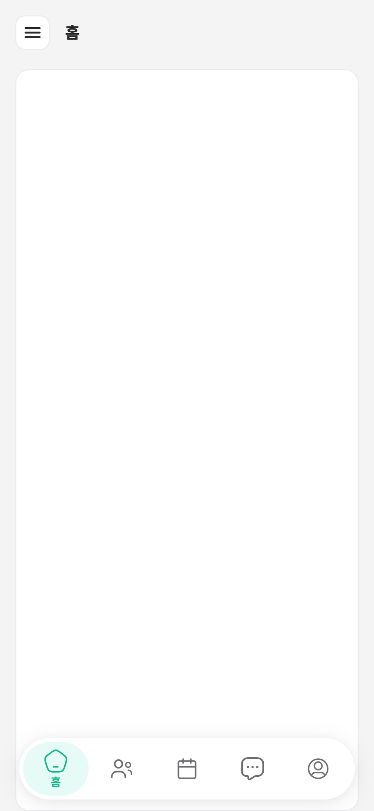
강사 모드 하단 탭 구성 — 마지막 [프로필] 탭을 두 번 누르면 모드가 바뀝니다
내 프로필 정보
이름·연락처 같은 내 정보는 모드와 관계없이 프로필 화면에서 확인합니다.
1
하단 탭 맨 오른쪽 [프로필]을 눌러주세요. 가로 태블릿에서는 왼쪽 사이드바 상단의 워크스페이스 아이콘 → [내 계정]입니다.
2
가운데 프로필 사진을 누르면 갤러리에서 사진을 고를 수 있습니다. 바꾼 사진은 서버에 저장되어 다른 기기와 회원 앱에서도 함께 바뀝니다.
3
이메일 · 연락처 · 생년월일 · 성별과 내 초대코드를 확인할 수 있습니다. 초대코드 우측 아이콘을 누르면 복사됩니다.
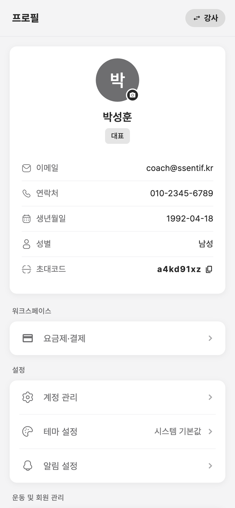
프로필 화면 — 사진을 누르면 변경, 초대코드는 탭해서 복사
앱 설정·계정 관리·로그아웃
프로필 화면 아래쪽에 앱 설정 메뉴가 모여 있습니다.
1
[테마 설정]에서 라이트 · 다크 · 시스템 기본값을 고를 수 있습니다.
2
[알림 설정]에서 받을 알림 종류를 켜고 끕니다.
3
[계정 관리]에서 연락처 변경 · 비밀번호 변경 · 계정 탈퇴를 할 수 있습니다.
4
맨 아래 [로그아웃]을 누르면 계정에서 안전하게 나갑니다. 다시 로그인하면 데이터는 그대로 남아 있습니다.
💡
[운동 라이브러리]와 [AI 코칭 스타일 설정]도 이 화면에서 바로 들어갈 수 있습니다.
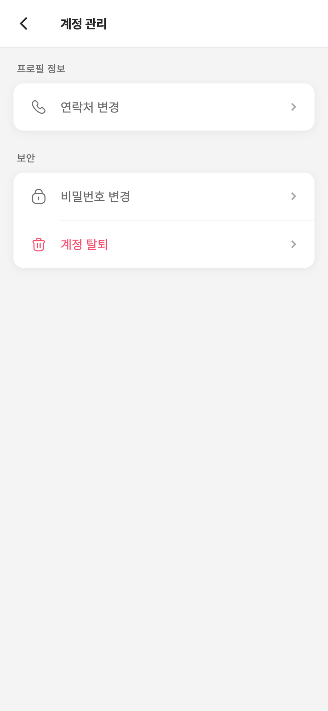
프로필 → 계정 관리 — 연락처 변경 · 비밀번호 변경 · 계정 탈퇴
1:1 채팅
1
[채팅] 탭에서 연동된 회원과의 대화방을 열 수 있습니다. 상단 회원 / 코치 탭으로 상대를 나눠 볼 수 있습니다.
2
우측 상단 [+]로 새 대화를 시작합니다. 담당 회원, 동료 코치, 그리고 여러 명을 묶은 단체방까지 만들 수 있습니다.
3
일정 변경 요청, 운동 질문, 사진 전달을 실시간으로 주고받으세요. 읽지 않은 메시지는 빨간 숫자로 표시됩니다.
💡
개인 연락처를 공개하지 않고도 회원과 소통할 수 있습니다. 회원이 보낸 수업 변경·취소 요청은 채팅 카드에서 바로 승인·거절할 수 있습니다.
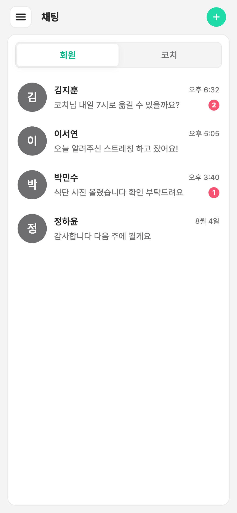
채팅 탭 — 회원/코치 전환, 미읽음 개수 표시
회원 공지 발송
1
홈 화면의 공지사항 카드에서 [전체보기]를 누르거나, 세로 화면에서는 좌측 상단 [≡] → [회원 공지]로 들어갑니다.
2
[공지 작성]을 누르고 카테고리(휴무 · 시설정비 · 이벤트 · 공지)를 고른 뒤 제목과 내용을 작성합니다.
3
저장하면 연동된 회원들의 앱에 공지가 전달됩니다. 휴무 안내, 이벤트, 센터 소식을 단체 문자 비용 없이 전달해보세요.
💡
작성한 공지는 목록에서 길게 눌러 수정·삭제할 수 있습니다.
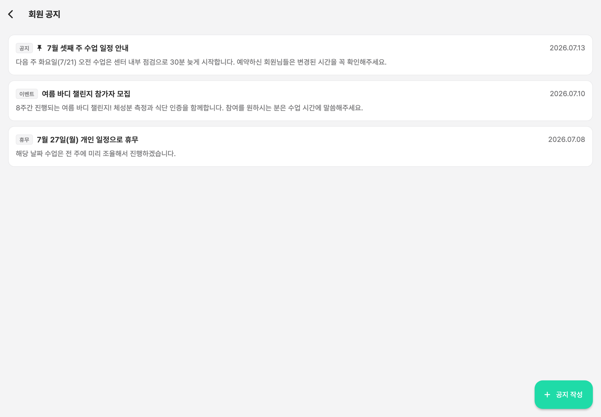
회원 공지 — 목록에서 작성·수정·삭제
공유 메모장
1
가로 태블릿에서는 [메모] 탭, 세로 화면에서는 좌측 상단 [≡] → [메모]에서 열 수 있습니다.
2
메모마다 개인 메모와 공유 메모를 고를 수 있습니다. 공유로 두면 지정한 팀원이 같은 내용을 봅니다.
3
본문 아래 사진 첨부 칸으로 기구 사진·화이트보드 사진을 함께 남길 수 있습니다.
💡
인수인계, 기구 점검, 재고 확인처럼 말로 전하면 사라지는 것을 남겨두는 용도로 쓰기 좋습니다.
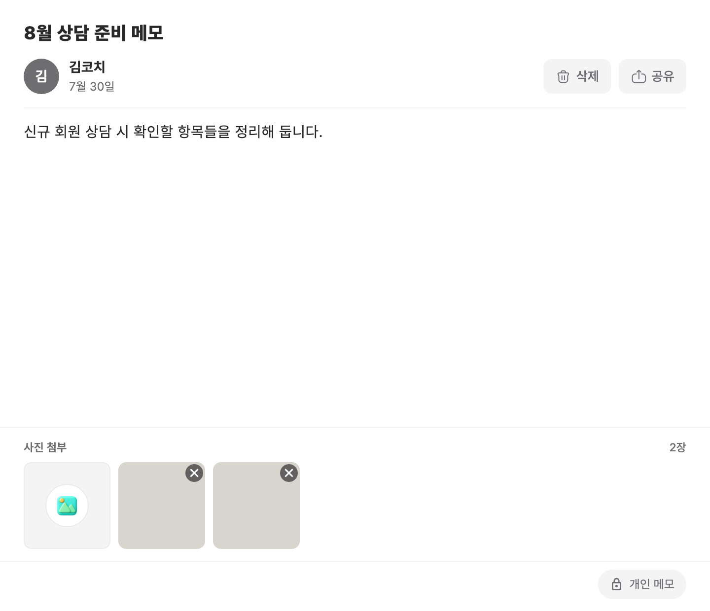
메모 편집 — 사진 첨부와 공유 범위
시작하기
강사 모드 첫걸음
홈 화면 한눈에 보기
앱을 열면 가장 먼저 만나는 화면입니다. 지금 할 일이 위에, 참고 정보가 아래에 놓입니다.
1
다음 일정 — 오늘 남은 일정 중 가장 가까운 수업이 큰 카드로 뜹니다. 카드에서 바로 [수업 기록]·[출석]·[결석]을 처리할 수 있습니다.
2
업무 알림 — 시설이용권 만료 임박, 잔여 횟수 소진, 상담 후 수강권 미등록처럼 지금 조치가 필요한 회원이 모입니다. 항목을 누르면 처리할 수 있는 화면으로 바로 이동합니다.
3
회원 인증 — 회원이 올린 식단·개인운동·체성분·체형 사진이 모입니다. 눌러서 확인하고 댓글·이모지로 피드백하세요.
4
이번달 성과 · 공지사항 · 도구 카드(운동 라이브러리, AI 코칭 스타일)가 함께 배치됩니다.
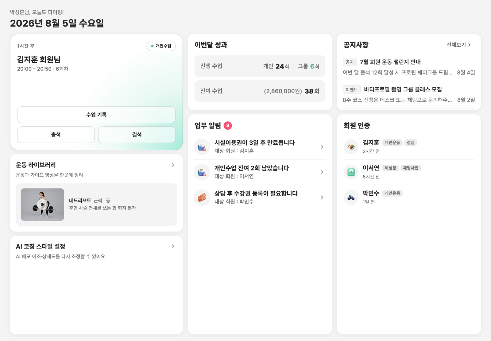
강사 홈(가로 태블릿) — 좌측 다음 일정, 가운데 성과·업무 알림, 우측 공지·회원 인증
💡
세로 화면(휴대폰)에서는 같은 카드들이 위에서 아래로 이어집니다.
회원 프로필 등록하기
수업을 시작하려면 먼저 회원 프로필을 만들어야 합니다. 프로필만 만들어도 일정·기록 관리가 되고, 회원 계정과 연동하면 온라인 코칭까지 가능해집니다.
1
[회원] 탭 상단의 [회원 추가]를 눌러주세요.
2
이름과 성별은 필수, 휴대폰 번호와 나이는 선택입니다.
3
[추가하기]를 누르면 등록이 끝납니다. 아직 상품이 없으므로 이 회원은 대기 상태로 들어갑니다.
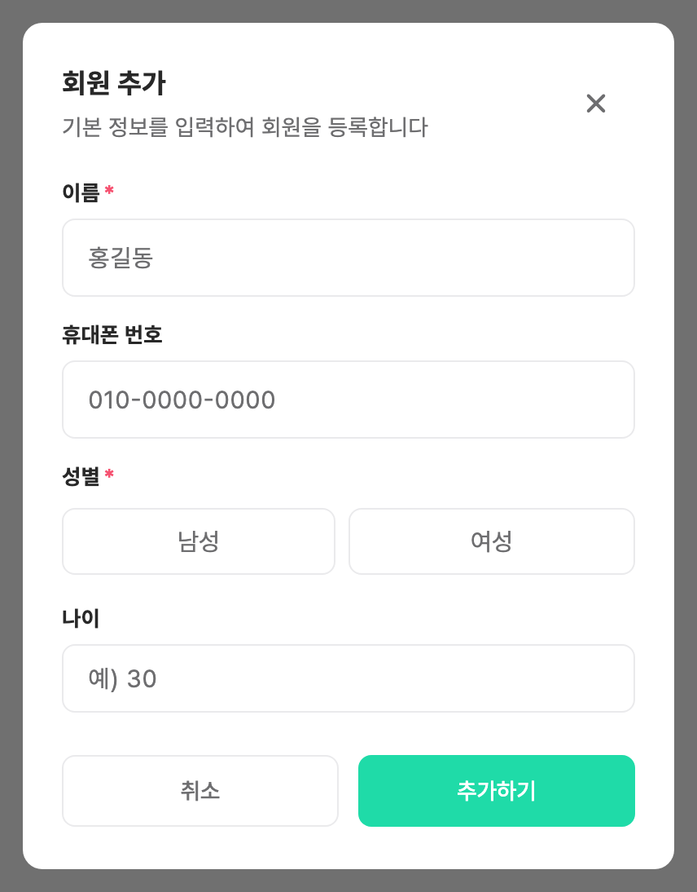
회원 추가 — 이름·성별만 필수입니다
💡
회원 목록의 대기 탭에서 방금 만든 회원을 볼 수 있습니다. 상품을 발급하면 활성으로 바뀝니다.
회원 계정 연동하기
회원이 센티프 회원 앱을 쓰고 있다면 프로필과 계정을 연결하세요. 연동하면 수업 일지 전달, 채팅, 식단·운동 인증이 모두 이어집니다.
1
회원 상세 화면 우측 상단의 [연동하기]를 누릅니다.
2
회원 앱에서 발급된 8자 연동 코드를 입력하거나, [QR 스캔]으로 회원 화면의 QR을 찍습니다.
3
코드 주인의 이름·연락처가 나타나면 내 회원이 맞는지 확인하고 [연동]을 누릅니다.
4
회원 목록의 배지가 미연동 → 연동으로 바뀝니다.
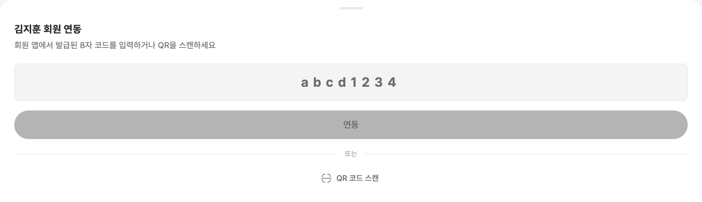
회원 연동 — 회원 앱의 8자 코드 또는 QR 스캔
⚠️
연동 전에 코드 주인의 정보를 반드시 확인해주세요. 회원이 아직 앱에 가입하지 않았다면 먼저 가입을 안내해야 합니다.
회원 프로필 삭제하기
1
[회원] 탭에서 삭제할 회원을 열고 [기본 정보] 탭으로 이동합니다.
2
맨 아래 회원 프로필 삭제 카드에서 [삭제하기]를 누릅니다.
3
안내를 읽고 동의에 체크하면 삭제가 진행됩니다.
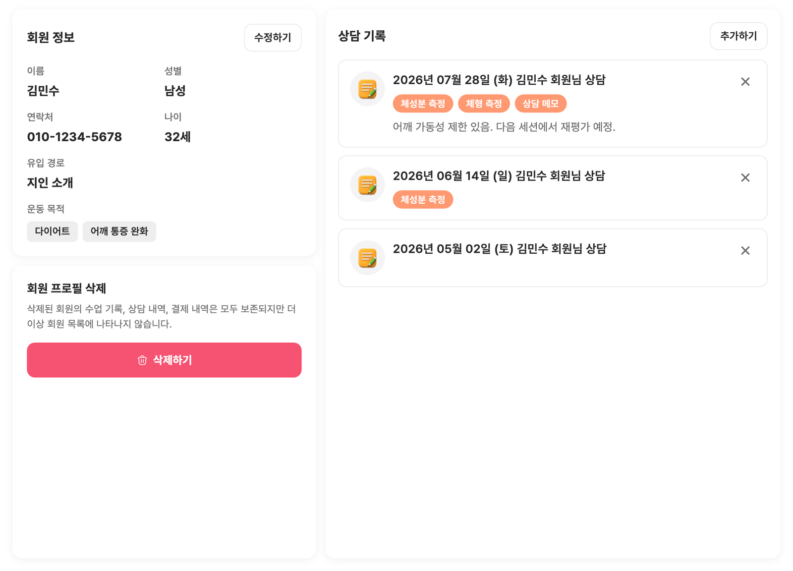
기본 정보 탭 → 회원 프로필 삭제 (삭제 진입점은 이곳 하나입니다)
⚠️
수강권이 하나라도 남아 있으면 삭제되지 않습니다. 먼저 상품을 만료처리하여 정리해주세요. 삭제된 기록은 복구되지 않습니다.
상품(수강권) 관리
상품을 만들고, 회원에게 발급하기
🧭
센티프의 상품은 두 단계로 동작합니다. ① 센터가 판매할 상품을 만들어두고 → ② 회원에게 그 상품을 발급합니다. 상품 만들기는 관리자 모드에서 합니다.
판매할 상품 만들기
개인수업 10회권, 시설이용권 3개월처럼 센터가 파는 구성을 한 번 만들어두면 발급할 때 골라 쓰기만 하면 됩니다.
⚠️
상품 만들기는 관리자 모드에서만 가능합니다. 모드 전환은 대표·관리자 권한에만 보이므로, 소속 강사(직원)라면 이 화면에 들어갈 수 없습니다. 필요한 상품이 있다면 센터 대표 또는 관리자에게 만들어 달라고 요청해주세요. 만들어진 상품은 곧바로 강사 모드의 상품 발급에서 선택할 수 있습니다.
1
관리자 모드로 전환한 뒤 [상품] 탭을 엽니다(세로 화면에서는 [≡] → [상품]).
2
우측 상단 [신규 상품 생성]을 누르고 분류를 고릅니다 — 개인수업 · 그룹수업 · 시설이용권 · 회원복 · 락커 · 기타 · 결합상품.
3
분류에 따라 필요한 값만 입력합니다. 개인수업이라면 횟수 · 회당 진행시간 · 판매가, 시설이용권이라면 유효기간 · 판매가입니다.
4
만든 상품은 카드로 쌓입니다. 카드의 [판매 중 / 판매 중지] 토글로 잠시 내려둘 수 있고, [수정]·[삭제]도 카드에서 바로 합니다.
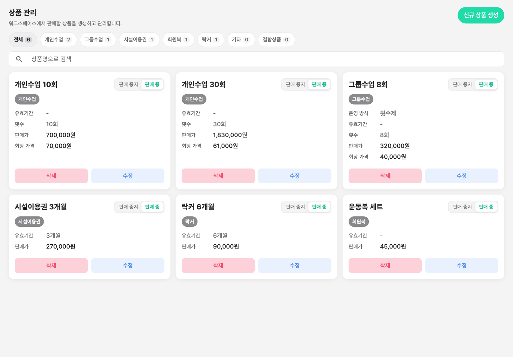
상품 관리(관리자 모드) — 우측 상단 [신규 상품 생성], 분류별 필터와 상품 카드
💡
여러 상품을 한 번에 파는 패키지는 결합상품으로 만들면 됩니다. 예) 개인수업 30회 + 운동복 세트 + 락커 6개월.
회원에게 상품 발급하기
1
[회원] 탭에서 회원을 열고 [상품] 탭으로 이동합니다.
2
‘구매 이력’ 오른쪽의 [+ 발급하기]를 누르면 상품 등록 창이 열립니다.
3
[추가하기]로 판매 상품을 고릅니다. 여러 개를 한 번에 담을 수 있습니다.
4
등록 유형(신규 · 재등록), 시작일, 결제 기준(부가세 포함 여부)을 확인합니다. 이미 이용 중인 기간제 상품이 있으면 시작일이 그 만료일 다음 날로 자동 제안됩니다.
5
결제 수단을 고르고(복수 선택 시 수단별 금액을 나눠 입력) [발급하기]를 누릅니다.
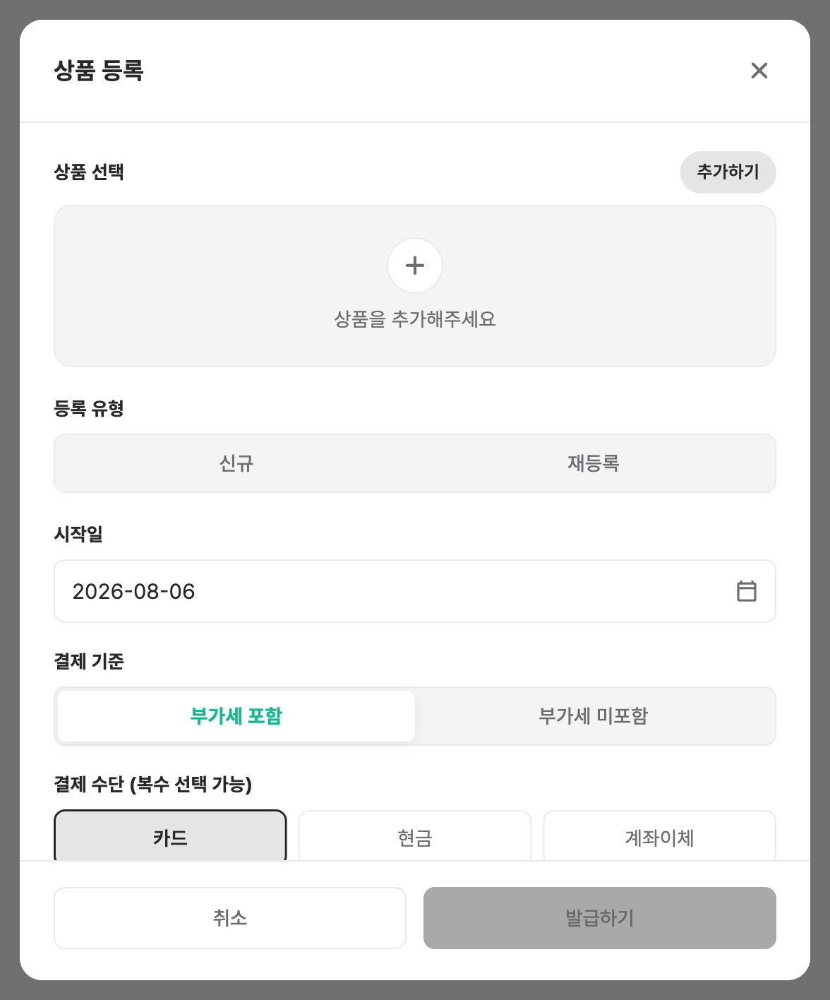
상품 등록 — 상품 선택 후 시작일·결제 정보 입력
💡
결제 수단을 여러 개 고르면 수단별 금액의 합계가 총액과 같아야 발급됩니다(예: 카드 50만 + 현금 20만 = 70만).
발급 내역 확인·수정·삭제
발급한 상품은 회원의 [상품] 탭에 결제 건 단위로 쌓입니다.
1
카드 위쪽에 등록유형 · 결제일 · 결제수단 · 금액이, 아래에 상품별 잔여 횟수나 만료 D-day가 표시됩니다.
2
결제 카드 우측 상단의 [⋯]에서 수정하기 또는 삭제를 고릅니다(대표·관리자 권한).
3
수정하기는 유효기간을 조정하는 창입니다. 상품별 시작일·종료일을 바꾸면 우측에 바뀐 일수가 함께 표시됩니다.
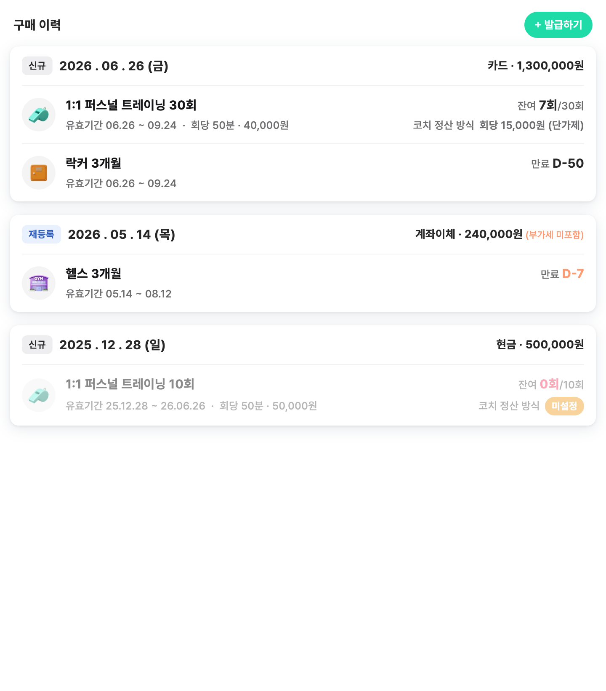
상품 탭 — 결제 건별 발급 내역
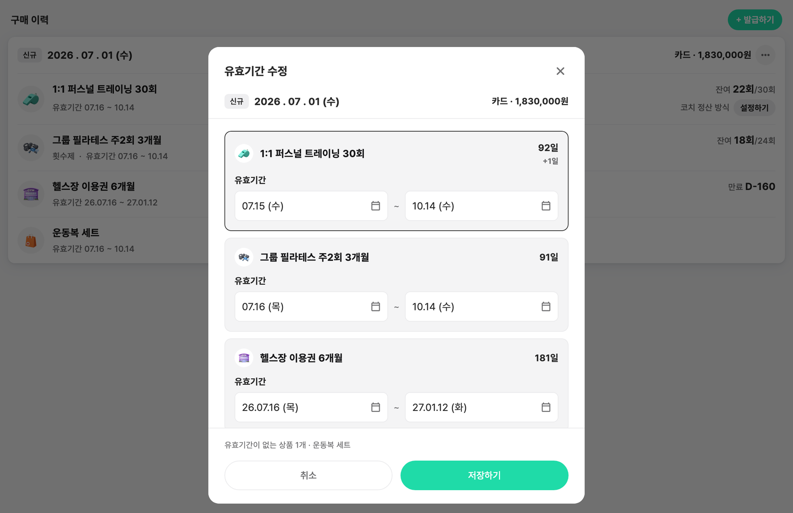
유효기간 수정 — 변경된 일수를 바로 확인
⚠️
결제 건을 삭제하면 그 상품으로 잡힌 개인수업 일정이 함께 삭제되고(그룹수업은 그 회원만 제외), 매출에서도 빠집니다. 삭제 전에 어떤 일정이 지워지는지 확인 창에서 알려드립니다. 되돌릴 수 없습니다.
일정 관리
예약하고, 출석을 처리하기
개인수업 예약하기
1
[일정] 탭에서 우측 상단 [일정 등록]을 누르거나, 달력의 빈 시간 칸을 바로 누릅니다.
2
맨 위에서 일정 타입을 고릅니다 — 개인수업 · 그룹수업 · 상담 · 센터 일정 · 개인 일정.
3
회원을 먼저 선택합니다. 예약 가능한 횟수가 남은 회원만 목록에 뜨고, 이름 옆에 예약가능 N회가 표시됩니다.
4
날짜와 시작 시간을 정합니다. 종료 시간은 상품에 설정된 진행시간만큼 자동 계산됩니다.
5
[등록]을 누르면 달력에 수업예정 상태로 표시됩니다.
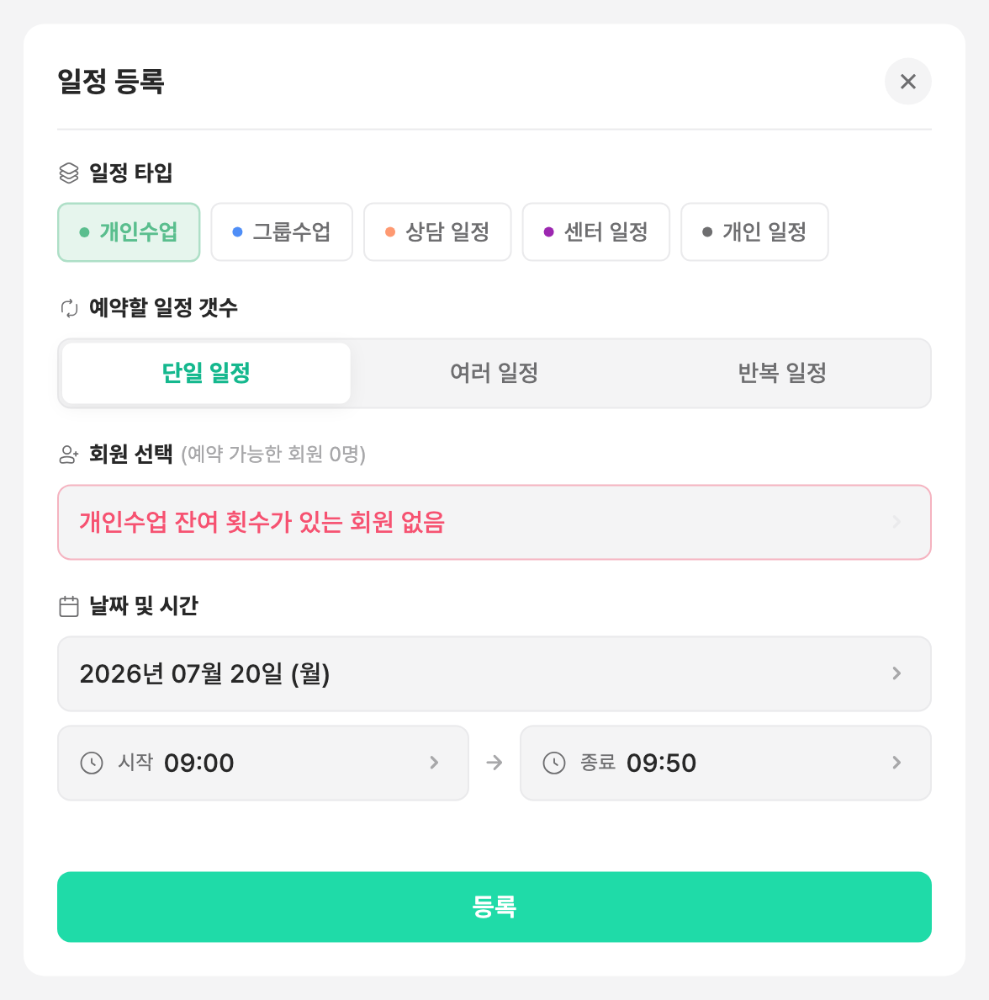
일정 등록 — 타입 → 회원 → 날짜·시간 순서로 입력
💡
같은 날짜에 이미 잡힌 일정은 날짜 아래 미리보기 칩으로 보여줍니다. 겹치는 시간을 피해 잡기 좋습니다.
💡
일정을 취소하려면 달력에서 일정을 누르고 [일정 삭제]를 선택하세요.
여러 날짜·반복 예약
‘매주 월·수·금 오후 7시’처럼 반복되는 수업은 한 번에 잡을 수 있습니다.
1
일정 등록 창의 예약할 일정 갯수에서 [여러 일정] 또는 [반복 일정]을 고릅니다.
2
여러 일정은 달력에서 원하는 날짜를 직접 여러 개 고르는 방식입니다. 날짜마다 시간을 다르게 줄 수도 있고, ‘모든 날짜에 같은 시간 적용’으로 한 번에 맞출 수도 있습니다.
3
반복 일정은 요일 + 종료일로 규칙을 만듭니다. 아래에 “○○까지 총 N개의 일정”으로 결과 개수를 미리 알려줍니다.
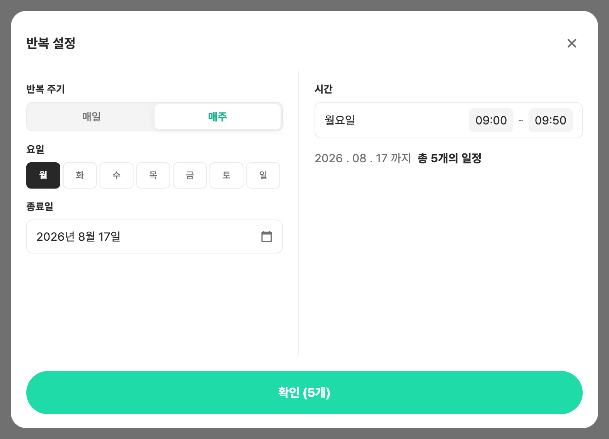
반복 설정 — 요일과 종료일을 정하면 개수를 미리 알려줍니다
💡
개인수업은 회원의 남은 횟수보다 많이 예약할 수 없습니다. 초과하면 기존 예약의 시간을 조정할 수 있는 창이 뜹니다.
그룹수업·기타 일정
1
그룹수업은 일정 타입에서 [그룹수업]을 고른 뒤 수업명과 정원을 정하고 참여 회원을 선택합니다.
2
상담 타입은 기존 회원을 고르거나, 아직 등록 전인 사람을 직접 입력(이름·연락처·성별)해 잡을 수 있습니다.
3
센터 일정(단체 휴무·시설 점검)과 개인 일정(청소·개인운동)은 일정명만 적으면 됩니다.
💡
개인 일정이 잡힌 시간대에는 회원이 예약을 요청할 수 없습니다. 비워두고 싶은 시간을 미리 막아두는 용도로 쓰세요.
출석·결석 처리
수업이 끝나면 출석을 처리해야 수강권이 차감되고 성과 데이터가 쌓입니다.
1
[홈]의 다음 일정 카드나 [일정] 탭에서 해당 수업을 누릅니다.
2
일정 상세에서 [출석 완료]를 누르면 상품이 1회 차감되고 상태가 수업완료로 바뀝니다.
3
노쇼라면 [결석 차감]을 누릅니다. 횟수는 차감되지만 결석으로 구분되어 기록됩니다.
4
상태에 따라 달력 블록 색이 바뀝니다 — 수업예정(파랑) → 수업완료(초록), 결석(빨강), 취소(회색).
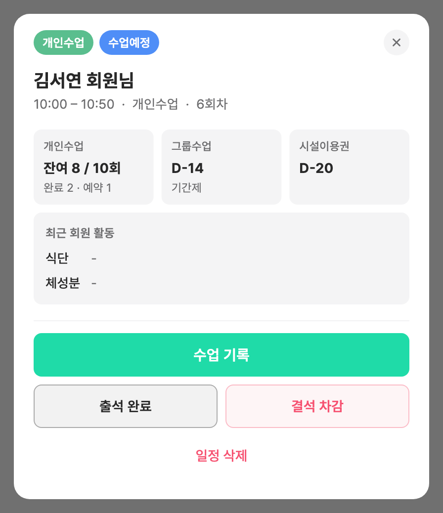
일정 상세 — 잔여 횟수를 확인하고 출석·결석 처리
💡
잘못 눌렀다면 같은 일정을 다시 열어 [출석 취소]를 누르세요. 차감된 횟수가 되돌아옵니다.
💡
그룹수업은 참여 회원 명단에서 한 명씩 출석을 처리합니다. 한 명을 취소해도 다른 회원은 영향받지 않습니다.
운동 라이브러리
수업에 쓸 운동 준비하기
운동 찾아보기
센티프는 기본 운동 카탈로그를 제공합니다. 수업 일지를 쓸 때 여기서 골라 담습니다.
1
홈의 운동 라이브러리 카드를 누르거나, [프로필] → [운동 라이브러리]로 들어갑니다.
2
이름으로 검색하거나 유형(근력 · 유산소 · 필라테스 · 기능성 · 스트레칭 · 요가)으로 좁혀 봅니다. 근력은 부위, 필라테스는 기구로 한 번 더 좁힐 수 있습니다.
3
운동을 누르면 가이드 시트가 열립니다. 가이드 영상이 등록된 운동은 그 자리에서 바로 재생됩니다.
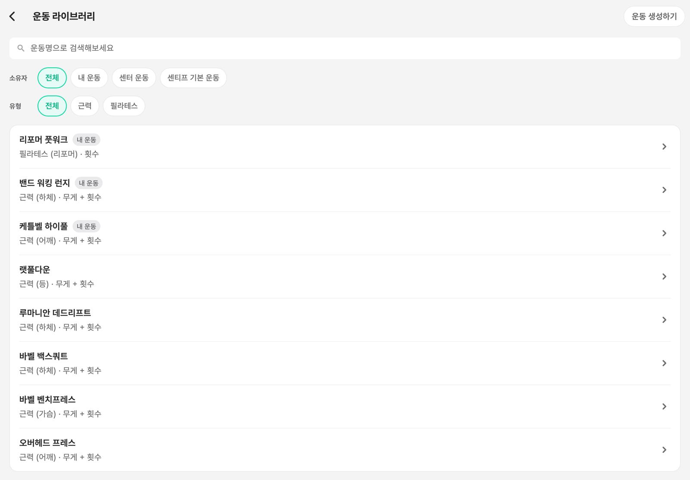
운동 라이브러리 — 유형과 부위로 좁혀 찾기
내 운동 직접 추가하기
기본 카탈로그에 없는 동작은 직접 등록해 나만의 운동으로 쓸 수 있습니다.
1
운동 라이브러리 또는 수업 일지의 운동 추가 창에서 [직접 추가]를 누릅니다.
2
운동명과 운동 유형을 고르고(근력·필라테스는 하위 분류까지), 측정 방법을 정합니다 — 무게·횟수 / 횟수 / 시간 / 거리.
3
필요하면 설명과 가이드 영상을 붙입니다. 영상은 링크(유튜브 등) 또는 파일 업로드(최대 100MB) 중 하나입니다.
4
공개 범위를 고릅니다. 개인 운동은 나만 보이고, 워크스페이스는 센터 전체가 함께 씁니다(대표·관리자만 선택 가능).
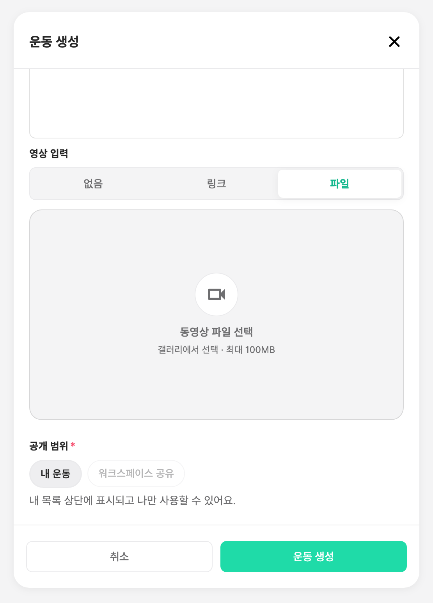
직접 추가 — 가이드 영상은 링크 또는 파일로 첨부
💡
등록한 운동은 수정·삭제할 수 있습니다. 단 이미 기록에 쓰인 운동은 측정 방법을 바꿀 수 없고, 삭제하더라도 이미 작성된 수업 일지는 그대로 남습니다.
회원 관리
기록과 데이터로 회원을 관리하기
🧭
회원을 누르면 활동 · 수업 · 신체변화 · 상품 · 기본 정보 5개 탭이 나옵니다. 아래 기능들은 모두 이 탭 안에 있습니다.
수업 일지 작성하기
수업이 끝나면 오늘 무엇을 했는지 기록합니다. 기록은 연동된 회원 앱으로도 전달됩니다.
1
홈의 다음 일정 카드 또는 일정 상세에서 [수업 기록]을 누르면 전체 화면 일지가 열립니다.
2
좌측 [+ 운동 추가]로 오늘 수행한 운동을 담습니다. 세로 화면에서는 상단 운동 레일의 [+ 운동]을 누르세요.
3
가운데 세트 기록 표에 무게·횟수를 입력합니다. 마지막 줄을 채우면 다음 줄이 자동으로 생깁니다. 태블릿에서는 펜으로 숫자를 써도 인식됩니다.
4
우측에 사진·영상을 붙이고 운동 메모를 적습니다. 메모를 쓴 뒤 [AI 메모 정리]를 누르면 문장을 다듬어 줍니다.
5
작성 중에도 자동 저장되며, 다 끝나면 우측 상단 [수업 완료]를 누릅니다.
6
완료 창에서 대표 사진 선택, 수업 종합 메모(AI 작성 제안 가능), 회원 서명을 남기고 저장하면 수강권이 1회 차감됩니다.
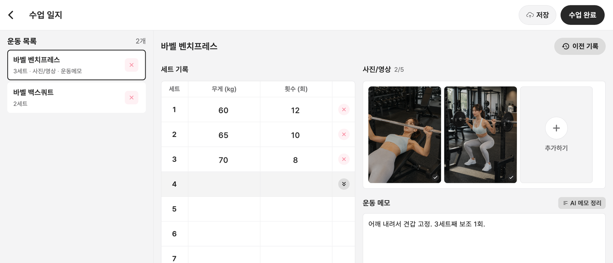
수업 기록 — 운동 목록 · 세트 표 · 사진/메모가 한 화면에
이전 기록과 비교하기
지난번에 몇 kg을 들었는지 찾아 헤맬 필요가 없습니다.
1
세트 표 왼쪽의 지난 기록 칸에 직전 수업의 값이 회색으로 표시됩니다.
2
더 자세히 보려면 운동 이름 오른쪽의 [이전 기록]을 누릅니다.
3
왼쪽에 지표 추이 그래프(추정 1RM · 최고중량 · 볼륨), 오른쪽에 날짜별 세트 기록이 나옵니다.
4
상단 필터로 수업 / 개인운동을 나눠 볼 수 있습니다. 회원이 혼자 한 운동까지 하나의 흐름으로 확인됩니다.
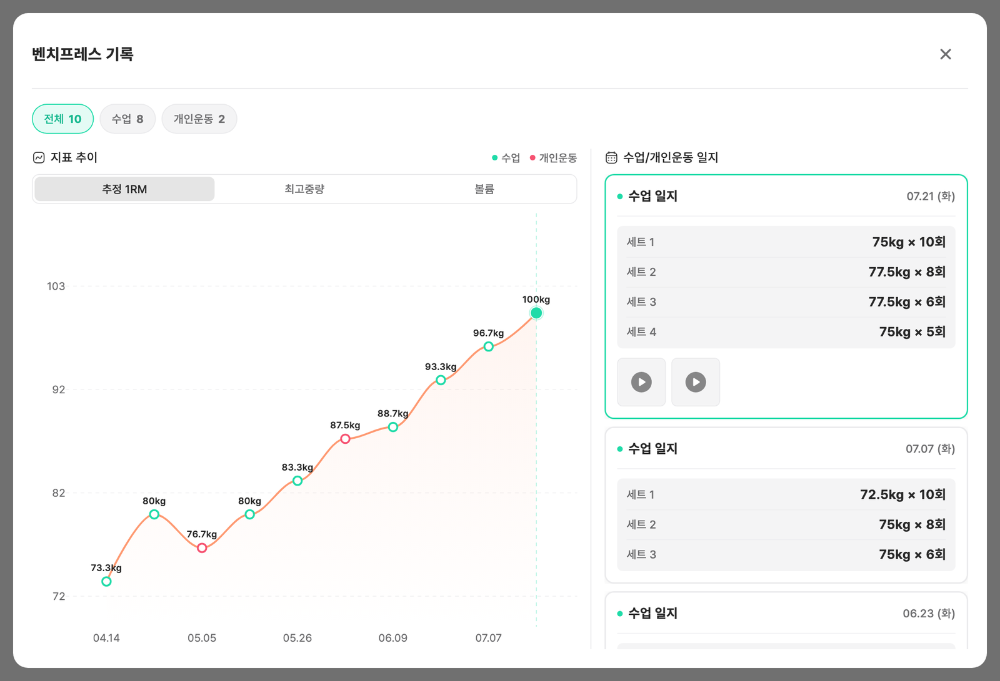
이전 기록 — 추이 그래프와 회차별 세트를 나란히
💡
빈 세트 줄의 ⇓ 버튼은 직전 세트 값 복사, ⟲ 버튼은 지난 수업 값 채우기입니다. 같은 무게로 이어갈 때 편합니다.
회원 인증 확인·피드백
회원이 올린 식단·운동·체성분·체형 사진은 홈의 회원 인증에 쌓입니다. 확인하면 목록에서 정리됩니다.
1
홈의 회원 인증 카드에서 회원을 누릅니다.
2
왼쪽 목록에서 항목을 고르면 오른쪽에 사진·수치가 크게 나옵니다.
3
각 항목 우측의 [확인]을 누르거나, 여러 건이면 위쪽 [전체 확인]으로 한 번에 처리합니다.
4
소통 탭에서 댓글과 이모지로 피드백을 남기면 회원 앱에 그대로 전달됩니다.
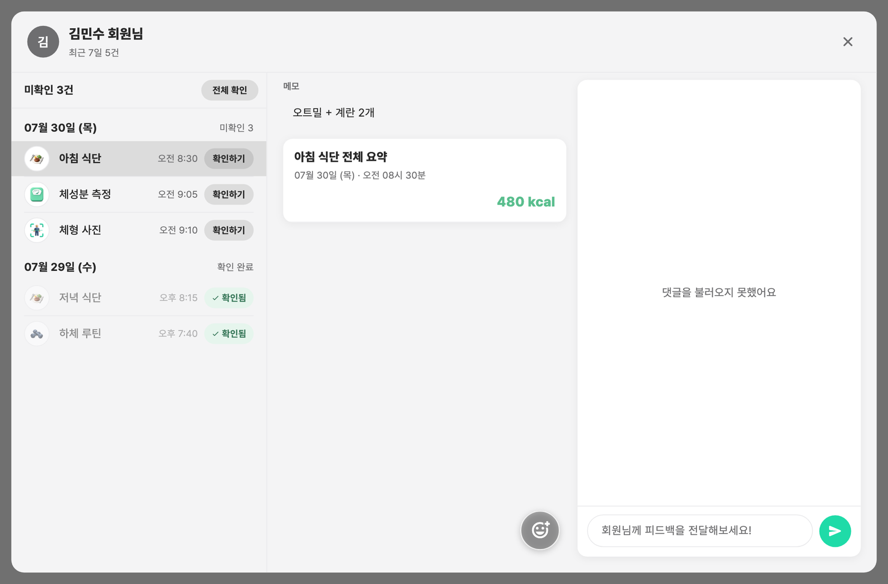
회원 인증 — 확인하고 그 자리에서 피드백
💡
회원이 올리지 않고 있다면 빈 화면의 [인증 요청 전송]으로 여러 회원에게 한 번에 요청할 수 있습니다.
회원 활동 기록 보기
1
회원 상세의 [활동] 탭을 엽니다.
2
월별 캘린더에 그 날의 기록이 색 점으로 표시됩니다 — 개인수업(초록) · 그룹수업(파랑) · 상담(주황) · 개인운동(빨강) · 식단(보라) · 변화(회색).
3
날짜를 누르면 오른쪽에 그날의 기록이 시간순으로 펼쳐집니다.
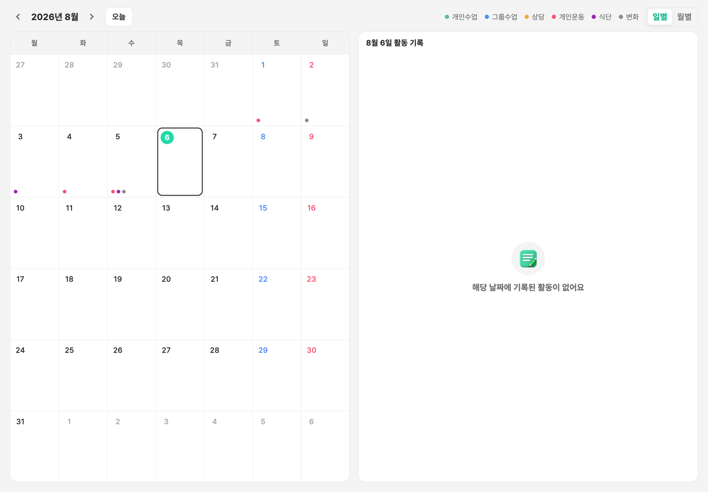
일별 보기 — 캘린더 도트로 참여도를 한눈에, 날짜를 누르면 우측에 상세
4
우측 상단에서 [월별]로 바꾸면 그 달에 올라온 사진이 한 화면에 모입니다. 전체 / 식단 / 개인운동 / 체성분 / 체형으로 걸러 볼 수 있습니다.
5
사진을 누르면 상세와 소통 탭이 열려 댓글·이모지로 피드백할 수 있습니다.
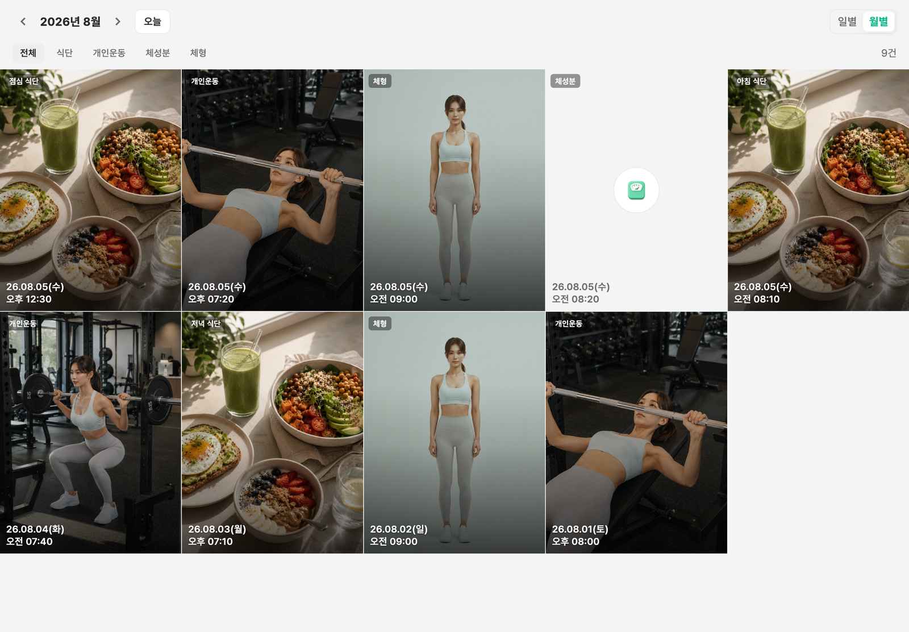
월별 보기 — 식단·운동·체형 사진이 한 달치로 모입니다
수업 성과 분석
기록이 쌓이면 성과가 자동으로 정리됩니다. 재등록 상담의 근거가 됩니다.
1
회원 상세의 [수업] 탭을 엽니다.
2
맨 위 요약 4카드에서 완료 수업 · 출석률 · 운동 종목 수 · 회당 볼륨을 확인합니다.
3
운동 분석에서 어떤 부위를 얼마나 했는지 도넛 그래프로 보고, 옆의 배운 운동 종목에서 지금까지 다룬 동작을 확인합니다.
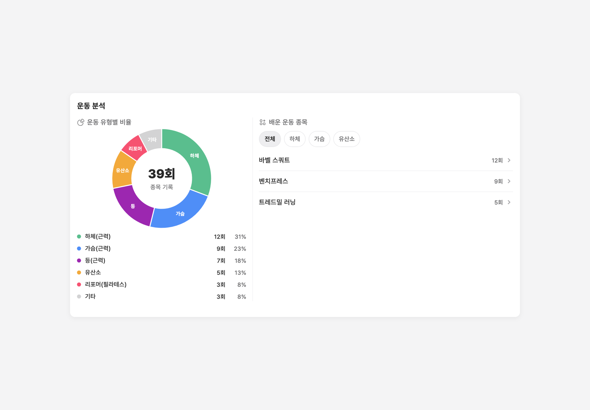
수업 탭 — 운동 유형별 비율과 종목 아카이브
지난 수업 일지 다시 보기
1
같은 [수업] 탭 아래쪽에 예정된 수업과 수업 일지가 나뉘어 쌓입니다.
2
카드에는 회차 · 날짜 · 운동 기록 · 종합 메모가 요약되어 있고, 누르면 그날의 일지가 그대로 열립니다.
3
아직 기록하지 않은 수업은 [기록하기] 버튼으로, 처리하지 않은 지난 수업은 처리 필요 배지로 표시됩니다.
4
섹션 우측의 목록 / 피드를 바꾸면 대표 사진 위주의 갤러리로 볼 수 있습니다.
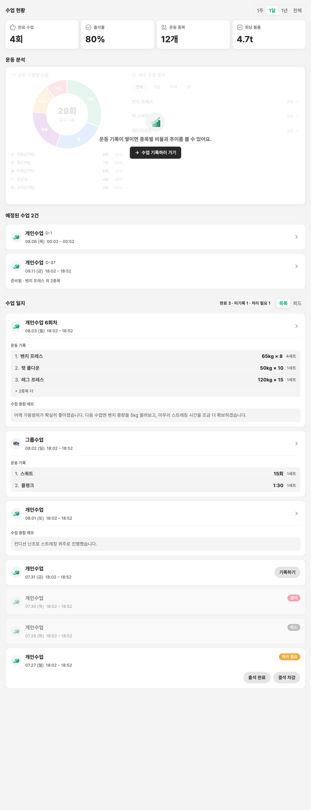
수업 일지 카드 — 회차·운동·메모가 한눈에
💡
수업 시작 전에 지난 기록을 훑어보면 오늘 수업의 방향을 잡기 쉽습니다.
체성분·체형 사진 기록
인바디 수치와 체형 사진을 기록하면 회원의 몸 변화가 눈에 보이게 쌓입니다.
1
회원 상세의 [신체변화] 탭을 엽니다.
2
체성분 측정 정보 제목 옆 [+]를 눌러 측정값을 입력합니다 — 측정 날짜 · 키 · 체중(필수) · 골격근량 · 체지방량 · 체지방률.
3
지표 카드를 누르면 그 항목의 변화 추이 그래프가 아래에 그려집니다.
4
체형 사진 기록의 [+]로 정면 · 측면 · 후면 3장을 촬영·등록합니다. 사진에 자세 가이드선을 그려 넣을 수도 있습니다.